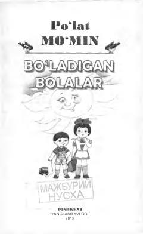

BBBolalar uchun odob-axloq, do'stlik va bilim haqidagi qiziqarli she'rlar to'plami.
Ushbu kitob taniqli bolalar shoiri Po'lat Mo'minning saralangan she'rlar to'plamidir. Unda ota-onaga ehtirom, do'stlik, mehnatsevarlik va odob-axloq kabi ezgu fazilatlar sodda va qiziqarli tilda tarannum etilgan.